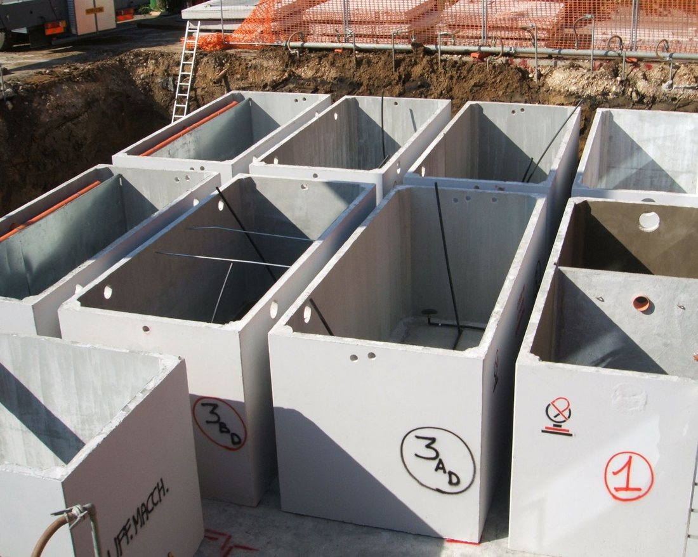
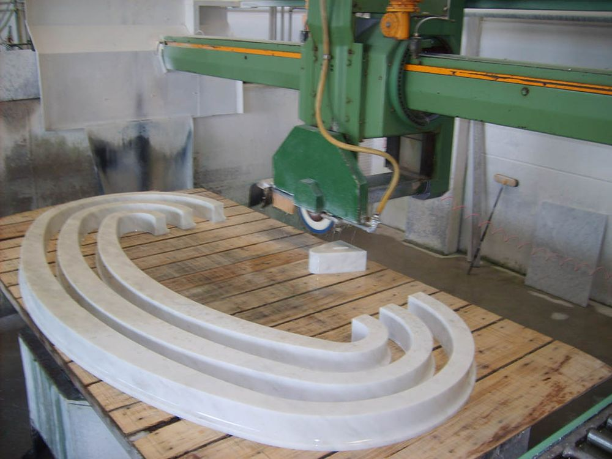

Tavola 2 di 7, materiali, edilizia ed esterni: due scelte di caratteri, ognuna con i testi, le foto e il logo dell’azienda per cui è pensata (Gardens Pav, Marmi Sgambaro).Tavola 1Indice delle tavoleTavola 3
Vasche in calcestruzzo, posate con l’autogru
In calcestruzzo armato vibrato, per l’acqua piovana, le acque di prima pioggia, l’acqua potabile e le riserve antincendio. Undici misure rettangolari e sei circolari, fino a 50 m³ in un pezzo solo.
Le vasche partono già con il coperchio carrabile. Il trasporto si fa con automezzi con e senza gru; a richiesta noleggiamo l’autogru per la posa. Per portate superiori o misure fuori tabella risponde il nostro ufficio tecnico.

Altivole (TV)San Lazzaro di Savena (BO)Aosta
Vasche rettangolari, quattro misure
Misure esterne, cm
Peso, t
Volume, m³
350 × 243 × 260
10
16
550 × 243 × 260
16
25
750 × 243 × 263
20
35
1050 × 243 × 263
27
50
Gardens Pav S.r.l., Via Romea 154/A, 35020 Legnaro (PD). Telefono 049 641591, dal lunedì al venerdì 8-12 e 14-18.
Scelta raccomandata: Jost 400, 500 e corsivo 400, per Gardens Pav. Riferimento: Mutina (mutina.it), piastrelle; Werner Sobek (wernersobek.com), ingegneria strutturale. Carattere originale: Futura PT (Mutina), Futura T (Werner Sobek). Attenzione: è nelle varianti di stile di Twenty Twenty-Four (Ember, Ice, Maelstrom) e nei temi Shopify di serie (Alajmo): regge solo con il logo geometrico di Gardens Pav e foto di cantiere grandi.
Scala interna lucida, spessore 8 cm. Scale, pavimenti, bagni e piani cucina in marmo e pietra, lavorati e posati dal laboratorio di San Martino di Lupari, dal 1948.
Scala monumentale interna, spessore 6 cm, con toro tondo e alzata sagomata con gola, balaustre tornite e corrimano sagomato. I profili si disegnano nello studio tecnico e si tagliano in laboratorio.

Le finiture dei 75 lavori pubblicati
Lucido
18 lavori
Anticato
17 lavori
Levigato
13 lavori
Lavorato a mano
8 lavori
Marmi Sgambaro, via Leonardo da Vinci 36, San Martino di Lupari (PD).
Prima alternativa: Prata 400 (nomi dei marmi e titoli); Golos Text 400, 500, 600, per Marmi Sgambaro. Riferimento: Rieder (rieder.cc), pannelli di facciata in calcestruzzo fibrorinforzato; clienti architetti, come quelli di Sgambaro. Carattere originale: PP Grafier Display + Tomato Grotesk.